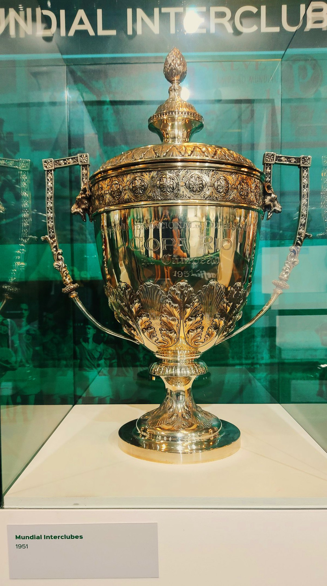

O Torneio Internacional de Clubes Campeões de 1951, também conhecido como Torneio Internacional de Clubes Campeões - Copa Rio, foi um torneio internacional de clubes disputado por 8 equipes da Europa e América do Sul entre 30 de junho e 22 de julho de 1951 em São Paulo e no Rio de Janeiro, nos estádios do Pacaembu e Maracanã, respectivamente.A competição foi conquistada pelo Palmeiras, do Brasil, e teve a Juventus, da Itália, como vice-campeã.
